Bike shop & cycling museum · Bainbridge Island, WA
Ride in for a repair,stay for the history.
New and used bikes, quick-turnaround repairs, bike fitting and repair classes, with a collection of vintage bicycles on the walls all around you. A few minutes up the trail from the Seattle ferry.
New bikesUsed bikesRepairs & tune-upsBike fittingRepair classesVintage restorationE-bike serviceCycling museumNew bikesUsed bikesRepairs & tune-upsBike fittingRepair classesVintage restorationE-bike serviceCycling museum
1985The year it started, as Sack’s Feed & Cycle in Kingston
3×America’s Best Bike Shops, 2014, 2015 and 2016
48 hMany repairs are ready within 24–48 hours, minor ones while you wait
$65Adult bike minor tune-up & safety check
The shop
A neighborhood bike shop, run by people who wrench for real.
Paul has been working on bikes since 1985 and spent years as a mechanic for the U.S. National Cycling Team. Bring us almost any bicycle, from a kid’s first bike to a Di2 road machine or a 1930s track bike.
In 2022 we picked up the shop and moved it a half mile north, away from the traffic on Winslow Way. The new place (formerly Key Bank) has lots of parking, private space for test rides including mountain bike trails through the woods, and a connection to the Sound to Olympics Trail.
It sits next to Ace Hardware and behind the McDonald’s, so it’s an easy stop on a Saturday morning errand run.
A wide selection of new & used bikes
Parts and accessories bought with a new bike are generally installed free
Free build for bikes purchased here
The museum
Vintage classics to modern marvels, on every wall.
The bikes in our museum are privately owned by Jaime Amador, Paul Johnson, Jeff Groman and other friends of Classic Cycle. We display them to share their beauty and the skill that went into making them. It’s meant to be interesting and entertaining, and we would never let the facts get in the way of a good story.
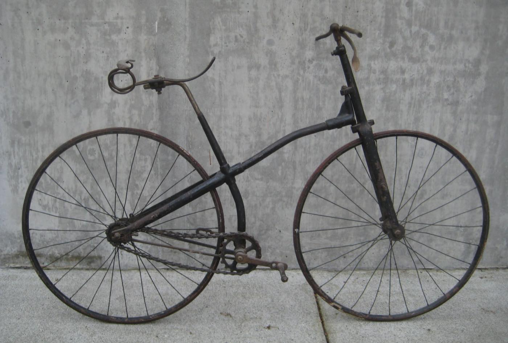
1880s Non PareilOne of the first chain-driven “safety” bicycles, a missing link in the evolution of the bike.
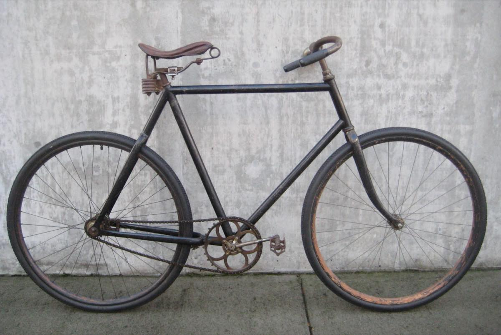
1898 C.A.E.From the pre-WWII corner of the collection.
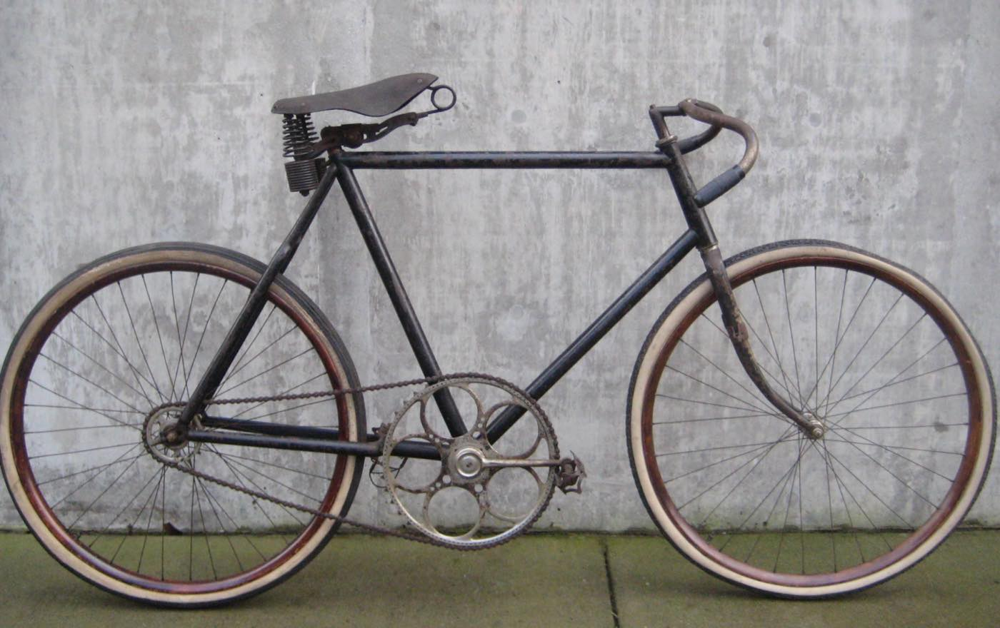
1907 RaCycle Pace MakerIts massive front chainring (like a modern 84-tooth) was meant to suggest speed. Original price: $16.50.
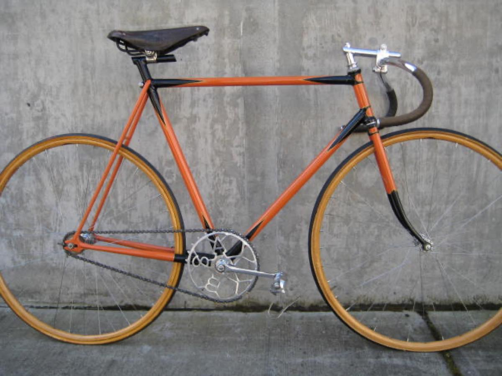
1932 BrennanBuilt by John “Pop” Brennan in his Newark, NJ workshop for the best racers of the day.
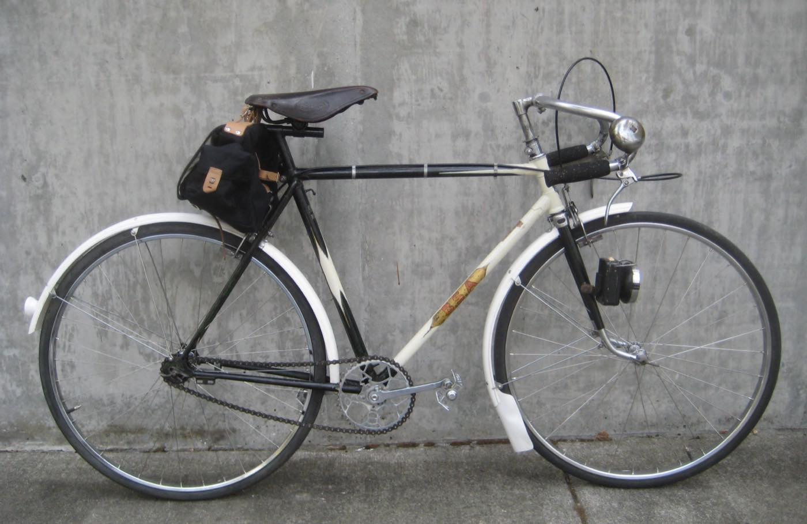
1938 BSA Triple StarReynolds 531 tubing, a Brooks saddle and a headlamp that still works. A gravel bike before gravel bikes.
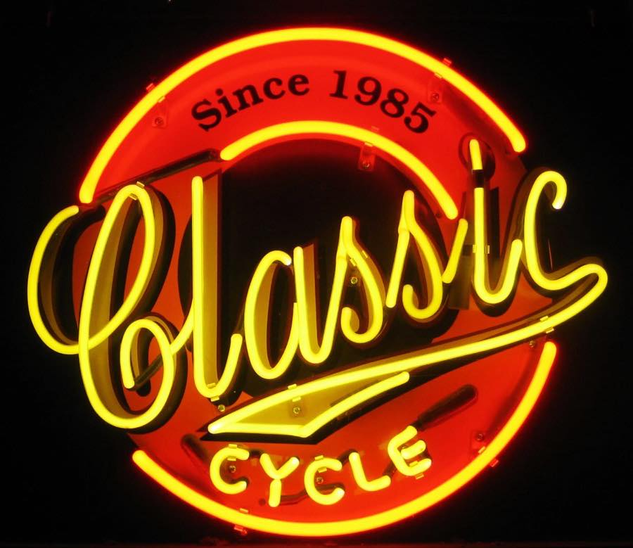
The collection runs from the late 19th through the mid 20th century and beyond: high-wheelers, pre-war track bikes, a Schwinn collection, team bikes and historic parts & memorabilia. Some museum bikes are even for sale. Ask at the counter.
Our story
From a feed store in Kingston to High School Road.
1985
Sack’s Feed & Cycle
Classic Cycle started in Kingston, likely the only Trek dealer in the universe where you could also buy hay, oats, garden tools and live chickens.
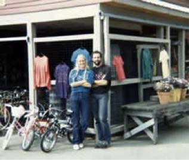
1993
Kingston Classic Cycle
Jeff moved the bike operation across the street. With antiques on the walls and true bicycle experts behind the work stand, the shop developed quite a following.
2001
Back to Bainbridge
Paul joined Jeff in the move to Bainbridge Island. We opened the week of the Nisqually earthquake, a two-man operation for years.
2003
The old Kingston hotel
Jeff bought the historic Kingston hotel building, and from 2003 to 2006 the shop overlooked the Edmonds–Kingston ferry.
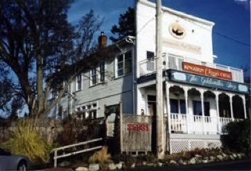
2007
Winslow Way
Finally, museum space. For almost fifteen years, 740 Winslow Way was the Classic Cycle most people know: more new bikes, more museum bikes and quite a bit more fun.
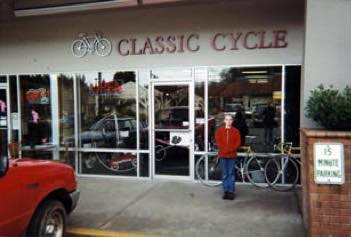
2010
Jaime & Paul take over
Classic Cycle celebrated its 25th year, and Jeff celebrated by selling the store to Jaime and Paul.
2022
617 High School Road
A half mile north: parking, test-ride trails and the Sound to Olympics Trail at the door.
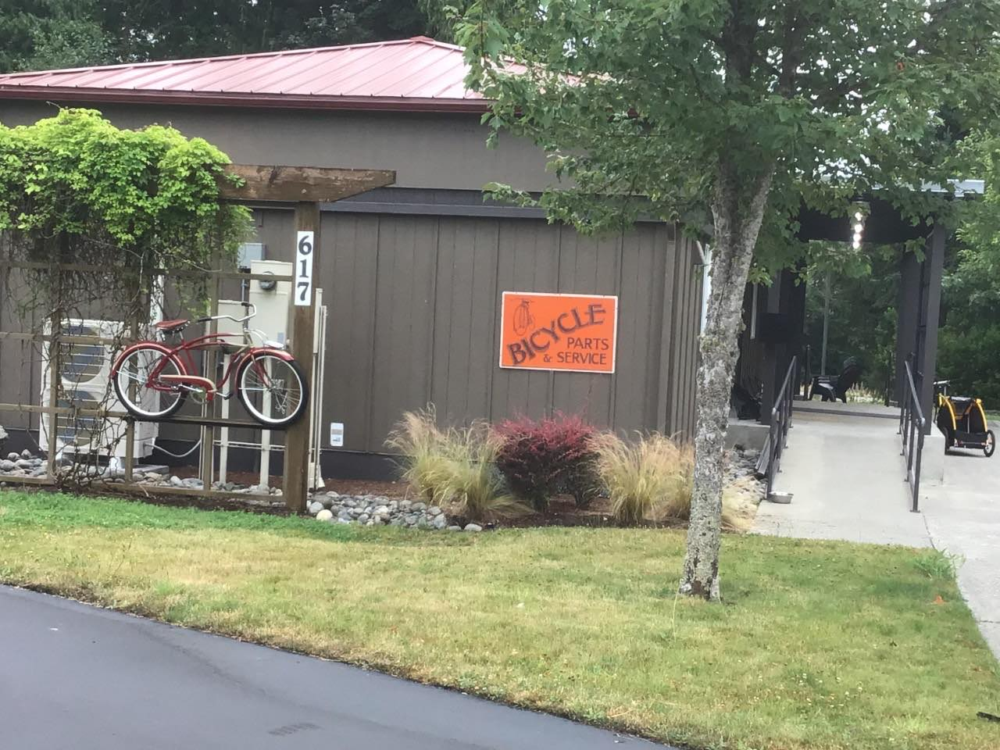
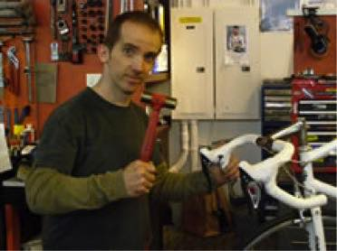
Paul
Owner & master mechanic
Started at a neighborhood bike shop in Richfield, Minnesota in 1985, at 14. Then Mavic and Shimano neutral race support and a few years with the U.S. Cycling Team: two Olympic Games and eight or nine World Championships.
J
Jaime
Owner
Raised by bakery owners and a veteran of a half-dozen small businesses, from Churchmouse Yarns and Tea on the island to bakeries in Bellevue and Bellingham. She rides to work nearly every day.
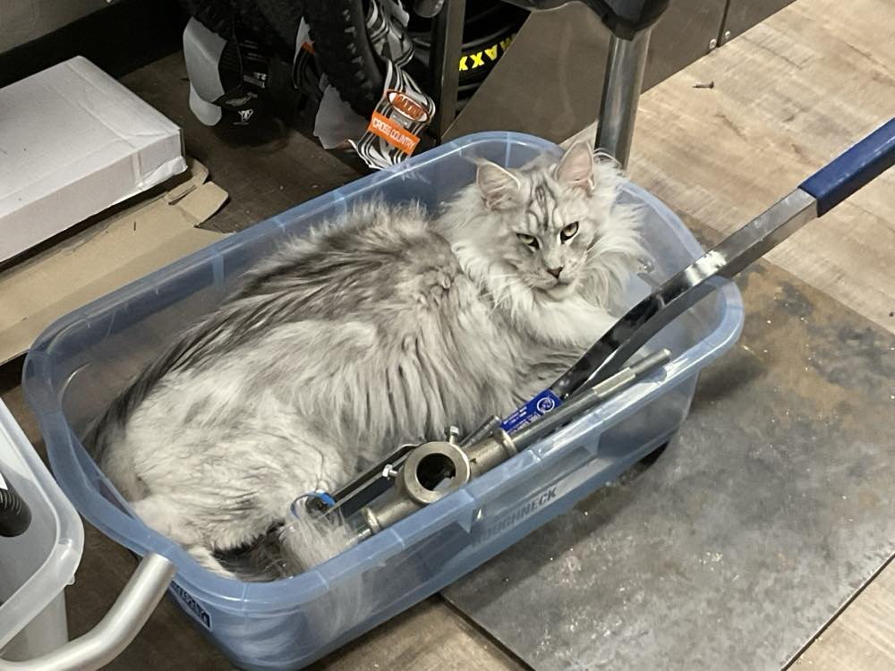
Tulio
Quality control inspector
A Maine Coon named after Tullio Campagnolo (one L dropped for pronunciation). Commutes in his trailer and is most helpful with helmet boxes and shoes with laces.
Coming over from Seattle? We’ll cover part of the ferry.
Spend more than $100 at Classic Cycle, show us your ferry ticket receipt, and get a $10 store credit. We’re a few minutes’ walk or ride from the ferry landing up the Sound to Olympics Trail. Not on the island? Call ahead and we’ll work on your bike while you wander around Bainbridge.
Questions
Good to know before you come in.
How long does a bike repair take?
Many minor repairs can be done while you wait, and lots of others are ready within 24–48 hours. If parts need ordering, we can usually get them within a few days.
Are there bikes you don’t work on?
We’ll work on nearly every brand, with two exceptions: bikes with home-made motor conversions, and some e-bikes with unusual wheel sizes, heft or custom parts (Radpower has a number of bikes like this) when we can’t source universal parts, lift the bike or fit the wheels into a truing stand.
Do you take trade-ins?
Yes. Bring the bike in and we’ll make you an offer. Bikes bought here typically get 20% more. We’re generally not interested in mass-merchant bikes, e-bikes that came direct from Amazon, or French bikes from the ’60s and ’70s.
Do you offer any discounts?
Active armed forces personnel get 10% off parts and accessories and 5% off bicycles. Gear Grinders mountain bike club members (or their parents) get 15% off parts and accessories and 5% off bikes.
Is a bike fit included with a new bike?
A basic fit is included with every new bike purchase. You can upgrade to a private one-on-one fit session by appointment.
Visit & repairs
Next to Ace Hardware, behind the McDonald’s.
617 High School Rd NE Bainbridge Island, WA 98110 (Winslow) Open in Google Maps